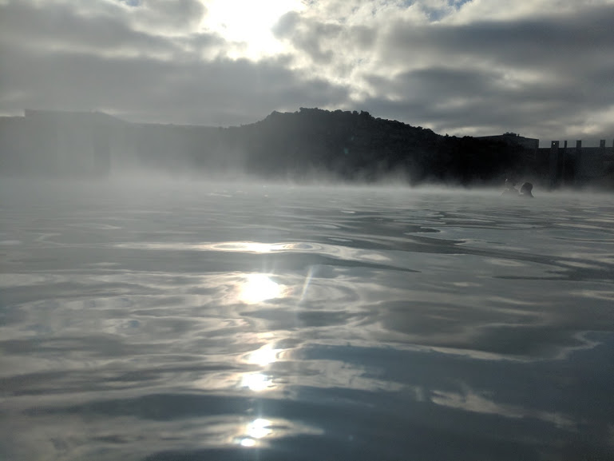

Almost all visitors to Iceland do indeed visit Reykjanes peninsula. It’s home to Keflavík International Airport, the main gateway to Iceland, and, of course, the great Blue Lagoon, which attracted around 600,000 visitors last year. However, large parts of the rest of the peninsula are—strange as it sounds, being so close to all this traffic—almost off the beaten track. With a rugged lava landscape, smoking geothermal fields, and many iconic historic structures, Reykjanes peninsula will surprise and delight.
Additionally,the ATV Quad biking tour through lava and black sand in Krýsuvík region is a very recommended activity in the peninsula. The tour takes you up into mountains where you can enjoy a fantastic view over the Blue Lagoon, the island of Eldey, and other local landmarks.
The Blue Lagoon is one of Iceland's most popular attractions.The beautiful milky-blue opaque water makes a stark contrast to the surrounding black lava field covered with dark green moss.The stark contrast between the neon blue water and the dark volcanic rocks is an awe-inspiring image that characterizes one of Iceland's most popular tourist destinations.
Steam rises around the facility like a smoke machine out of a movie and the sting of the neon blue water plays tricks with your mind because, at a toasty 38 degrees Celsius, a natural pool is not suppose to be this hot. It is situated on the Reykjanes peninsula in southwest Iceland. It is only a 15-minute drive from the international airport of Keflavík, or around a 30-minute drive from Reykjavík. That makes it the perfect first stop when arriving in Iceland, or the last stop before you leave the country.
